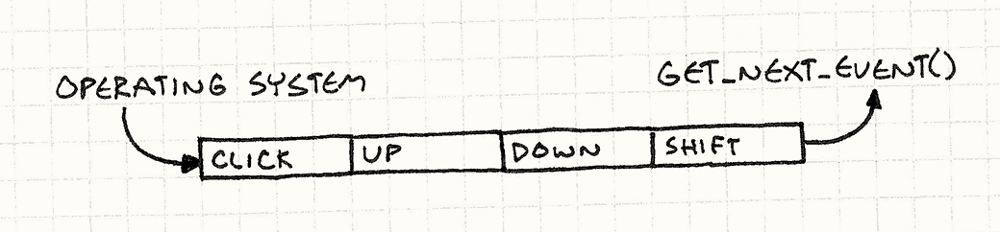
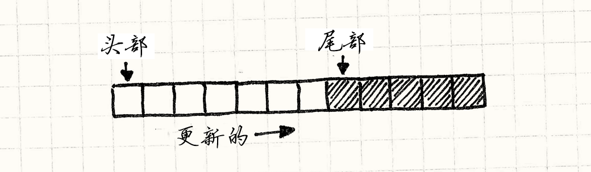
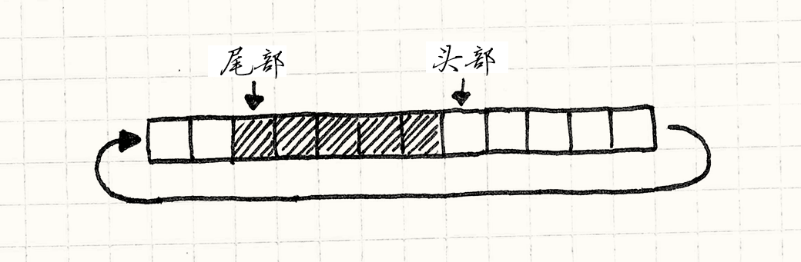

事件队列
游戏设计模式Decoupling Patterns
Intent
意图
Decouple when a message or event is sent from when it is processed.
解耦发出消息或事件的时间和处理它的时间。
Motivation
动机
Unless you live under one of the few rocks that still lack Internet access, you’ve probably already heard of an “event queue”. If not, maybe “message queue”, or “event loop”, or “message pump” rings a bell. To refresh your memory, let’s walk through a couple of common manifestations of the pattern.
除非还呆在一两个没有互联网接入的犄角旮旯，你可能已经听说过“事件序列”了。 如果没有，也许“消息队列”或“事件循环”或“消息泵”可以让你想起些什么。 为了唤醒你的记忆，让我们了解几个此模式的常用表示。
GUI event loops
GUI事件循环
If you’ve ever done any user interface programming, then you’re well acquainted with events. Every time the user interacts with your program — clicks a button, pulls down a menu, or presses a key — the operating system generates an event. It throws this object at your app, and your job is to grab it and hook it up to some interesting behavior.
如果你曾做过任何用户界面编程，你就会很熟悉事件。 每当用户与你的程序交互——点击按钮，拉出菜单，或者按个键——操作系统就会生成一个事件。 它会将这个对象扔给你的应用，你的工作就是抓住它然后挂上一些有趣的行为。
In order to receive these missives, somewhere deep in the bowels of your code is an event loop. It looks roughly like this:
为了处理这些事件，代码的深处是事件循环。它大体上是这样的：
while (running) { Event event = getNextEvent(); // Handle event... }
The call to getNextEvent() pulls a bit of unprocessed user input into your
app. You route it to an event handler and, like magic, your application comes to
life. The interesting part is that the application pulls in the event when
it wants it. The operating system doesn’t just immediately jump to some code in your app when the user pokes a
peripheral.
对getNextEvent()调用将一堆未处理的用户输出传到应用中。
你将它导向事件处理器，之后，魔术般，应用获得了生命。
有趣的部分是应用在它想要的时候获取事件。
操作系统在用户接触外部代码时不是直接跳转到你应用的某处代码。
That means when user input comes in, it needs to go somewhere so that the
operating system doesn’t lose it between when the device driver reported the
input and when your app gets around to calling getNextEvent(). That
“somewhere” is a queue.
这就意味着当用户输入进来时，它需要去某处，这样操作系统在设备驱动报告输入和应用去调用getNextEvent()之间不会丢失它。
这个“某处”是一个队列。

When user input comes in, the OS adds it to a queue of unprocessed events. When
you call getNextEvent(), that pulls the oldest event off the queue and hands it
to your application.
当用户输入抵达时，操作系统将其添加到未处理事件的队列中。
当你调用getNextEvent()时，它从队列中获取最老的事件然后交给应用。
Central event bus
中心事件总线
Most games aren’t event-driven like this, but it is common for a game to have its own event queue as the backbone of its nervous system. You’ll often hear “central”, “global”, or “main” used to describe it. It’s used for high level communication between game systems that want to stay decoupled.
大多数游戏不是像这样事件驱动的，但是在游戏中使用一个事件循环来支撑中枢系统是很常见的。 你通常听到用“中心”“全局”“主体”描述它。 这对于游戏系统想要保持解耦的高层相互交流是很方便的。
Say your game has a tutorial system to display help boxes after specific in-game events. For example, the first time the player vanquishes a foul beastie, you want to show a little balloon that says, “Press X to grab the loot!”
假设游戏有教程系统在某些特定游戏事件后显示帮助框。 举个例子，当玩家第一次击败了邪恶野兽，你想要一个小气泡显示着，“按X拿起战利品！”
Your gameplay and combat code are likely complex enough as it is. The last thing you want to do is stuff a bunch of checks for triggering tutorials in there. Instead, you could have a central event queue. Any game system can send to it, so the combat code can add an “enemy died” event every time you slay a foe.
游戏玩法和战斗代码也许像上面一样复杂。 最后想做的是检查一堆教程的触发器。 又或者，你可以使用中心事件队列。 任何游戏系统都可以发给它，这样战斗代码可以在砍倒敌人时发出“敌人死亡”事件。
Likewise, any game system can receive events from the queue. The tutorial engine registers itself with the queue and indicates it wants to receive “enemy died” events. This way, knowledge of an enemy dying makes its way from the combat system over to the tutorial engine without the two being directly aware of each other.
就像这样，任何游戏系统都能从队列接受事件。 教程引擎在队列中注册自己，然后表明它想要收到“敌人死亡”事件。 用这种方式，敌人死了的消息从战斗系统传到了教程引擎，而不需要这两个系统直接知道对方的存在。

I thought about using this as the example for the rest of the chapter, but I’m not generally a fan of big global systems. Event queues don’t have to be for communicating across the entire game engine. They can be just as useful within a single class or domain.
我想过使用这个作为这章其他部分的例子，但是我真不喜欢这样巨大的全局系统。 事件队列不需要在整个游戏引擎中沟通。在一个类或者领域中就足够有用了。
Say what?
你说什么？
So, instead, let’s add sound to our game. Humans are mainly visual animals, but hearing is deeply connected to our emotions and our sense of physical space. The right simulated echo can make a black screen feel like an enormous cavern, and a well-timed violin adagio can make your heartstrings hum in sympathetic resonance.
所以，相反，让我们给游戏添加一些声音。 人类主要是视觉动物，但是听觉强烈影响到情感系统和空间感觉。 正确模拟的回声可以让黑屏感觉上是巨大的洞穴，而适时的小提琴慢板可以让你的心弦哼着同样的旋律。
To get our game wound for sound, we’ll start with the simplest possible approach and see how it goes. We’ll add a little “audio engine” that has an API for playing a sound given an identifier and a volume:
为了获得受伤时的声音，我们从最简单的解决方法开始，看看结果如何。 添加一个“声音引擎”，其中有使用标识符和音量就可以播放音乐的API：
class Audio { public: static void playSound(SoundId id, int volume); };
It’s responsible for loading the appropriate sound resource, finding an available channel to play it on, and starting it up. This chapter isn’t about some platform’s real audio API, so I’ll conjure one up that we can presume is implemented elsewhere. Using it, we write our method like so:
它负责加载合适的声音资源，找到可靠的播放频道，然后启动它。 这章不是关于某个平台真实的音频API，所以我会假设在其他某处魔术般实现了一个。 使用它，我们像这样写方法：
void Audio::playSound(SoundId id, int volume) { ResourceId resource = loadSound(id); int channel = findOpenChannel(); if (channel == -1) return; startSound(resource, channel, volume); }
We check that in, create a few sound files, and start sprinkling playSound()
calls through our codebase like some magical audio fairy. For example, in our UI
code, we play a little bloop when the selected menu item changes:
我们签入以上代码，加入声音文件，然后在代码中像魔法仙女一样调用playSound()。
举个例子，在UI代码中，我们在选择菜单项变化时播放一点杂音：
class Menu { public: void onSelect(int index) { Audio::playSound(SOUND_BLOOP, VOL_MAX); // Other stuff... } };
After doing this, we notice that sometimes when you switch menu items, the whole screen freezes for a few frames. We’ve hit our first issue:
这样做了之后，注意到当你改变菜单项目时，整个屏幕就会冻住几帧。 我们找到了第一个问题：
-
Problem 1: The API blocks the caller until the audio engine has completely processed the request.
-
问题一：API在音频引擎完成处理请求前阻塞了调用者。
Our playSound() method is synchronous — it doesn’t return back to the
caller until bloops are coming out of the speakers. If a sound file has to be
loaded from disc first, that may take a while. In the meantime, the rest of the
game is frozen.
我们的playSound()方法是同步的——它在从播放器放出声音前不会返回调用者。
如果声音文件要从光盘上加载，那就得花费一定时间。
与此同时，游戏的其他部分被冻住了。
Ignoring that for now, we move on. In the AI code, we add a call to let out a wail of anguish when an enemy takes damage from the player. Nothing warms a gamer’s heart like inflicting simulated pain on a virtual living being.
现在忽视这一点，我们继续。 在AI代码中，我们增加了一个调用，在敌人承受玩家伤害时发出痛苦的低号。 没有什么比在虚拟的生物身上施加痛苦更能温暖玩家心灵的了。
It works, but sometimes when the hero does a mighty attack, it hits two enemies in the exact same frame. That causes the game to play the wail sound twice simultaneously. If you know anything about audio, you know mixing multiple sounds together sums their waveforms. When those are the same waveform, it’s the same as one sound played twice as loud. It’s jarringly loud.
这能行，但是有时玩家打出暴击，他在同一帧可打到两个敌人。 这让游戏同时要播放两遍哀嚎。 如果你知道任何有关音频的事，那么就知道要把两个不同的声音混合在一起，需要加和它们的波形。 当这两个是同一波形时，它与一个声音播放两倍响是一样的。那会响得刺耳。
We have a related problem in boss fights when piles of minions are running around causing mayhem. The hardware can only play so many sounds at one time. When we go over that limit, sounds get ignored or cut off.
在Boss战中有个相关的问题，当有一堆小怪跑动制造伤害时。 硬件只能同时播放一定数量的音频。当数量超过限度时，声音就被忽视或者切断了。
To handle these issues, we need to look at the entire set of sound calls to
aggregate and prioritize them. Unfortunately, our audio API handles each
playSound() call independently. It sees requests through a pinhole, one at a
time.
为了处理这些问题，我们需要看到声音调用的整体集合，用来整合和排序。
不幸的是，音频API独立处理每一个playSound()调用。
看起来这些请求是从针眼穿过，一次一个。
-
Problem 2: Requests cannot be processed in aggregate.
-
问题二：请求无法合并处理。
These problems seem like mere annoyances compared to the next issue that falls
in our lap. By now, we’ve strewn playSound() calls throughout the codebase in
lots of different game systems. But our game engine is running on modern
multi-core hardware. To take advantage of those cores, we distribute those
systems on different threads — rendering on one, AI on another, etc.
这个问题与下面的相比似乎只是烦恼。
现在，我们在很多不同的游戏系统中散布了playSound()调用。
但是游戏引擎是在现代多核机器上运行的。
为了使用这些核带来的优势，我们将系统分散在不同线程上——渲染在一个，AI在另一个，诸如此类。
Since our API is synchronous, it runs on the caller’s thread. When we call it from different game systems, we’re hitting our API concurrently from multiple threads. Look at that sample code. See any thread synchronization? Me neither.
由于我们的API是同步的，它在调用者的线程上运行。 当从不同的游戏系统调用时，我们从多个线程同时使用API。 看看示例代码，看到任何线程同步性了吗？我也没看到。
This is particularly egregious because we intended to have a separate thread for audio. It’s just sitting there totally idle while these other threads are busy stepping all over each other and breaking things.
当我们想要一个分离的线程给音频，这个问题就更加严重。 当其他线程都忙于跟随对方和制造事物，它只是傻傻待在那里。
-
Problem 3: Requests are processed on the wrong thread.
-
问题三：请求在错误的线程上执行。
The common theme to these problems is that the audio engine interprets a call to
playSound() to mean, “Drop everything and play the sound right now!”
Immediacy is the problem. Other game systems call playSound() at their
convenience, but not necessarily when it’s convenient for the audio engine to
handle that request. To fix that, we’ll decouple receiving a request from
processing it.
音频引擎调用playSound()意味着，“放下任何东西，现在就播放声音！”立即就是问题。
游戏系统在它们方便时调用playSound()，但是音频引擎不一定能方便去处理这个请求。
为了解决这点，我们将接受请求和处理请求解耦。
The Pattern
模式
A queue stores a series of notifications or requests in first-in, first-out order. Sending a notification enqueues the request and returns. The request processor then processes items from the queue at a later time. Requests can be handled directly or routed to interested parties. This decouples the sender from the receiver both statically and in time.
队列在先入先出队列中存储一系列通知或请求。 发送通知将请求放入队列并返回。 请求处理器之后稍晚从队列中处理事项。 这解耦了发送者和接收者，既静态又及时。
When to Use It
何时使用
If you only want to decouple who receives a message from its sender, patterns like Observer and Command will take care of this with less complexity. You only need a queue when you want to decouple something in time.
如果你只是想解耦接收者和发送者，像观察者模式和命令模式都可以用较小的复杂度处理它。 在需要解耦某些及时的东西时使用队列。
I think of it in terms of pushing and pulling. You have some code A that wants another chunk B to do some work. The natural way for A to initiate that is by pushing the request to B.
用推和拉来考虑。 有一块代码A需要另一块代码B去做些事情。 对A自然的处理方式是将请求推给B。
Meanwhile, the natural way for B to process that request is by pulling it in at a convenient time in its run cycle. When you have a push model on one end and a pull model on the other, you need a buffer between them. That’s what a queue provides that simpler decoupling patterns don’t.
同时，对B自然的处理请求的方式是在B方便时将其拉入。 当你在一个末尾有推模型另一末尾有拉模型，你需要在它们间放缓存。 这就是队列提供的而简单的解耦模式没有提供的。
Queues give control to the code that pulls from it — the receiver can delay processing, aggregate requests, or discard them entirely. But queues do this by taking control away from the sender. All the sender can do is throw a request on the queue and hope for the best. This makes queues a poor fit when the sender needs a response.
队列给了代码拉的控制权——接收者可以延迟处理，合并或者忽视请求。 但队列做这些事是通过将控制权从发送者那里拿走完成的。 发送者能做的就是向队列发送请求然后祈祷。 当发送者需要回复时，队列不是好选择。
Keep in Mind
记住
Unlike some more modest patterns in this book, event queues are complex and tend to have a wide-reaching effect on the architecture of our games. That means you’ll want to think hard about how — or if — you use one.
不像这书中的其他谦虚的模式，事件队列很复杂，会对游戏架构引起广泛影响。 这就意味着你会努力思考如何——或者要不要——使用一个。
A central event queue is a global variable
中心事件队列是一个全局变量
One common use of this pattern is for a sort of Grand Central Station that all parts of the game can route messages through. It’s a powerful piece of infrastructure, but powerful doesn’t always mean good.
这个模式的通常方法是一个大的交换站，游戏中的每个部分都能将消息送过这里。 这是很有用的基础架构，但是有用并不代表好。
It took a while, but most of us learned the hard way that global variables are bad. When you have a piece of state that any part of the program can poke at, all sorts of subtle interdependencies creep in. This pattern wraps that state in a nice little protocol, but it’s still a global, with all of the danger that entails.
这会花费一点时间，但是我们中的大多数艰难地学到了全局变量是不好的。 当有一小片状态，程序的每部分都能接触到，各种精妙的相关性都会产生。 这个模式将状态包裹在协议中，但是它还是全局的，仍然有全局变量引发的全部危险。
The state of the world can change under you
世界的状态可以因你改变
Say some AI code posts an “entity died” event to a queue when a virtual minion shuffles off its mortal coil. That event hangs out in the queue for who knows how many frames until it eventually works its way to the front and gets processed.
假设一些AI代码在虚拟小怪结束它一生时，将“实体死亡”事件发送到队列中。 这个事件在队列中等待了谁知有多少帧后才排到了前面，得以处理。
Meanwhile, the experience system wants to track the heroine’s body count and reward her for her grisly efficiency. It receives each “entity died” event and determines the kind of entity slain and the difficulty of the kill so it can dish out an appropriate reward.
同时，系统想要追踪英雄的杀敌数，并奖励他的高效。 它接受每个“实体死亡”事件，然后决定他杀死了何种怪物，以及杀戮的难易程度，最终计算处理合适的奖励值。
That requires various pieces of state in the world. We need the entity that died so we can see how tough it was. We may want to inspect its surroundings to see what other obstacles or minions were nearby. But if the event isn’t received until later, that stuff may be gone. The entity may have been deallocated, and other nearby foes may have wandered off.
这需要游戏世界的多种不同状态。 我们需要死亡的实体看看它的难度。 我们也许要看看他的周围有什么其他的障碍物或者怪物。 但是如果事件没有及时处理，这些东西都会消失。 实体可能被清除，周围的东西也有可能移开。
When you receive an event, you have to be careful not to assume the current state of the world reflects how the world was when the event was raised. This means queued events tend to be more data heavy than events in synchronous systems. With the latter, the notification can say “something happened” and the receiver can look around for the details. With a queue, those ephemeral details must be captured when the event is sent so they can be used later.
当你接到事件时，得小心，不能假设现在的状态反映了事件发生时的世界。 这就意味着队列中的事件比同步系统中的事件需要存储更多数据。 在后者中，通知可以说“某事发生了”然后接收者可以寻找细节。 通过队列，这些短暂的细节必须在事件发送时就被捕获，以方便之后的使用。
You can get stuck in feedback loops
会陷于反馈循环中
All event and message systems have to worry about cycles:
- A sends an event.
- B receives it and responds by sending an event.
- That event happens to be one that A cares about, so it receives it. In response, it sends an event…
- Go to 2.
任何事件系统和消息系统都得担心环路：
- A发送了一个事件
- B接收然后发送事件作为回应。
- 这个事件恰好是A关注的，所以它收到了。为了回应，它发送了一个事件。
- 回到2.
When your messaging system is synchronous, you find cycles quickly — they overflow the stack and crash your game. With a queue, the asynchrony unwinds the stack, so the game may keep running even though spurious events are sloshing back and forth in there. A common rule to avoid this is to avoid sending events from within code that’s handling one.
当消息系统是同步的，你很快就能找到环路——它们溢出了栈并让游戏崩溃。 使用队列，异步地使用栈，即使虚假事件晃来晃去时，游戏仍然可以继续运行。 避免这个的通用方法就是避免在处理事件的代码中发送事件。
Sample Code
示例代码
We’ve already seen some code. It’s not perfect, but it has the right basic functionality — the public API we want and the right low-level audio calls. All that’s left for us to do now is fix its problems.
我们已经看到一些代码了。它不完美，但是有基本的正确功能——公用的API和正确的底层音频调用。 剩下需要做的就是修复它的问题。
The first is that our API blocks. When a piece of code plays a sound, it can’t
do anything else until playSound() finishes loading the resource and actually
starts making the speaker wiggle.
首先我们的API是阻塞的。
当代码播放声音时，它不能做任何其他事情，直到playSound()加载完音频然后真正的开始播放。
We want to defer that work until later so that playSound() can return quickly.
To do that, we need to reify the request to play a sound. We need a little
structure that stores the details of a pending request so we can keep it around
until later:
我们想要推迟这项工作，这样 playSound() 可以很快的返回。
为了达到这一点，我们需要具体化播放声音的请求。
我们需要一个小结构存储发送请求的细节，这样我们晚些时候可以使用：
struct PlayMessage { SoundId id; int volume; };
Next, we need to give Audio some storage space to keep track of these pending
play messages. Now, your algorithms professor might
tell you to use some exciting data structure here like a Fibonacci
heap or a skip
list, or, hell, at least a linked
list. But in practice, the best way to store a bunch of homogenous things is
almost always a plain old array:
下面我们需要给Audio一些存储空间来追踪正在进行中的播放消息。
现在，你的算法专家也许会告诉你使用激动人心的数据结构，
比如Fibonacci heap或者skip list或者最起码链表。
但是在实践中，存储一堆同类事物最好的办法是使用一个平凡无奇的经典数组：
-
No dynamic allocation.
-
没有动态分配。
-
No memory overhead for bookkeeping information or pointers.
-
没有记录信息或者指针的内存天花板。
-
Cache-friendly contiguous memory usage.
-
缓存友好的连续空间使用。
So let’s do that:
所以让我们那样做吧：
class Audio { public: static void init() { numPending_ = 0; } // Other stuff... private: static const int MAX_PENDING = 16; static PlayMessage pending_[MAX_PENDING]; static int numPending_; };
We can tune the array size to cover our worst case. To play a sound, we simply slot a new message in there at the end:
我们可以将数组大小设置为最糟的情况。 为了播放声音，简单的将新消息插到最后：
void Audio::playSound(SoundId id, int volume) { assert(numPending_ < MAX_PENDING); pending_[numPending_].id = id; pending_[numPending_].volume = volume; numPending_++; }
This lets playSound() return almost instantly, but we do still have to play
the sound, of course. That code needs to go somewhere, and that somewhere is an
update() method:
这让playSound()几乎是立即返回，当然我们仍得播放声音。
那块代码在某处，某处是个update()方法：
class Audio { public: static void update() { for (int i = 0; i < numPending_; i++) { ResourceId resource = loadSound(pending_[i].id); int channel = findOpenChannel(); if (channel == -1) return; startSound(resource, channel, pending_[i].volume); } numPending_ = 0; } // Other stuff... };
Now, we need to call that from somewhere convenient. What “convenient” means depends on your game. It may mean calling it from the main game loop or from a dedicated audio thread.
现在我们需要从方便的某处调用。 这个“方便”取决于你的游戏。 它也许要从主游戏循环中或者专注于音频的线程中调用。
This works fine, but it does presume we can process every sound request in a
single call to update(). If you’re doing something like processing a request
asynchronously after its sound resource is loaded, that won’t work. For
update() to work on one request at a time, it needs to be able to pull
requests out of the buffer while leaving the rest. In other words, we need an
actual queue.
这可行，但是这假定了我们在对update()的单一调用中可以处理每个声音请求。
如果你做了像在声音资源加载后做异步请求的事情，这就没法工作了。
update()一次处理一个请求，它需要有完成一个后从缓存中再拉出一个请求的能力。
换言之，我们需要一个真实的队列。
A ring buffer
环状缓存
There are a bunch of ways to implement queues, but my favorite is called a ring buffer. It preserves everything that’s great about arrays while letting us incrementally remove items from the front of the queue.
这里有很多种方式实现队列，但我最喜欢的是环状缓存。 它保留了数组的很多好东西，同时让我们不断从队列的前方移除事物。
Now, I know what you’re thinking. If we remove items from the beginning of the array, don’t we have to shift all of the remaining items over? Isn’t that slow?
现在，我知道你在想什么。 如果我们从数组的前方移除东西，不是需要将所有剩下的都移动一次吗？这不是很慢吗？
This is why they made us learn linked lists — you can remove nodes from them without having to shift things around. Well, it turns out you can implement a queue without any shifting in an array too. I’ll walk you through it, but first let’s get precise on some terms:
这就是为什么要学习链接列表——你可以从中移除一个节点，而无需移动东西。 好吧，其实你可以用数组实现一个队列而无需移动东西。 我会展示给你看，但是首先预习一些术语：
-
The head of the queue is where requests are read from. The head is the oldest pending request.
-
队列的头部是请求读取的地方。头部存储最早发出的请求。
-
The tail is the other end. It’s the slot in the array where the next enqueued request will be written. Note that it’s just past the end of the queue. You can think of it as a half-open range, if that helps.
-
尾部是另一种终点。它是数组中下个入队请求要写的地方。注意它是队列的终点的下一个。你可以将其理解为一个半开半闭区间，如果这有帮助的话。
Since playSound() appends new requests at the end of the array, the head
starts at element zero and the tail grows to the right.
由于 playSound() 向数组的结尾添加了新的请求，头部在元素0上而尾部向右增长。

Let’s code that up. First, we’ll tweak our fields a bit to make these two markers explicit in the class:
让我们将其编码。首先，我们显示定义这两个标记在类中的意义：
class Audio { public: static void init() { head_ = 0; tail_ = 0; } // Methods... private: static int head_; static int tail_; // Array... };
In the implementation of playSound(), numPending_ has been replaced with
tail_, but otherwise it’s the same:
在 playSound() 的实现中，numPending_被tail_取代，但是其他都是一样的：
void Audio::playSound(SoundId id, int volume) { assert(tail_ < MAX_PENDING); // Add to the end of the list. pending_[tail_].id = id; pending_[tail_].volume = volume; tail_++; }
The more interesting change is in update():
更有趣的变化在update()中：
void Audio::update() { // If there are no pending requests, do nothing. if (head_ == tail_) return; ResourceId resource = loadSound(pending_[head_].id); int channel = findOpenChannel(); if (channel == -1) return; startSound(resource, channel, pending_[head_].volume); head_++; }
We process the request at the head and then discard it by advancing the head pointer to the right. We detect an empty queue by seeing if there’s any distance between the head and tail.
我们在头部处理，然后通过将头部指针向右移动来消除它。 我们定义头尾之间没有距离的队列为空队列。
Now we’ve got a queue — we can add to the end and remove from the front.
There’s an obvious problem, though. As we run requests through the queue, the
head and tail keep crawling to the right. Eventually, tail_ hits the end
of the array, and party time is over. This is where it
gets clever.
现在，我们获得了一个队列——我们可以向尾部添加从前面移除。
这里有很明显的问题。在我们向队列添加请求时，头和尾继续向右移动。
最终tail_碰到了数组的尾部，欢乐时光结束了。
之后是这个方法的灵巧之处。

Notice that while the tail is creeping forward, the head is too. That means we’ve got array elements at the beginning of the array that aren’t being used anymore. So what we do is wrap the tail back around to the beginning of the array when it runs off the end. That’s why it’s called a ring buffer — it acts like a circular array of cells.
注意当尾部向后移动时，头部也是如此。 这就意味着我们在数组开始部分的元素再也没有使用了。 所以我们做的就是，当抵达末尾时，将尾部回折到数组的头部。 这就是为什么它被称为环状缓存，它表现的像是一个环状的数组。

Implementing that is remarkably easy. When we enqueue an item, we just need to make sure the tail wraps around to the beginning of the array when it reaches the end:
实现这个非常简单。 当我们入队一个事物时，只需要保证尾部在抵达结束的时候回折到数组的开头：
void Audio::playSound(SoundId id, int volume) { assert((tail_ + 1) % MAX_PENDING != head_); // Add to the end of the list. pending_[tail_].id = id; pending_[tail_].volume = volume; tail_ = (tail_ + 1) % MAX_PENDING; }
Replacing tail_++ with an increment modulo the array size wraps the tail back
around. The other change is the assertion. We need to ensure the queue doesn’t
overflow. As long as there are fewer than MAX_PENDING requests in the queue,
there will be a little gap of unused cells between the head and the tail. If the
queue fills up, those will be gone and, like some weird backwards Ouroboros, the
tail will collide with the head and start overwriting it. The assertion ensures
that this doesn’t happen.
替代tail++为一个增量，增量取数组长度的模，这样可将尾部回折回来。
另一个改变是断言。我们得保证队列不会溢出。
只要这里有少于MAX_PENDING的请求在队列中，在头部和尾部之间就有没有使用的间隔。
如果队列满了，这些不会有了，就像古怪的衔尾蛇一样，尾部会遇到头部然后复写它。
断言保证了这点不会发生。
In update(), we wrap the head around too:
在update()中，我们也回折了头部：
void Audio::update() { // If there are no pending requests, do nothing. if (head_ == tail_) return; ResourceId resource = loadSound(pending_[head_].id); int channel = findOpenChannel(); if (channel == -1) return; startSound(resource, channel, pending_[head_].volume); head_ = (head_ + 1) % MAX_PENDING; }
There you go — a queue with no dynamic allocation, no copying elements around, and the cache-friendliness of a simple array.
这样就好——没有动态分配，没有数据拷贝，缓存友好的简单数组实现的队列完成了。
Aggregating requests
合并请求
Now that we’ve got a queue in place, we can move onto the other problems. The first is that multiple requests to play the same sound end up too loud. Since we know which requests are waiting to be processed now, all we need to do is merge a request if it matches an already pending one:
现在有队列了，我们可以解决其他问题了。 首先是多重播放同一音频请求最终会让其播放的太响了。 由于我们知道哪些请求在等待处理，需要做的所有事就是将请求和早先处理的同一请求合并：
void Audio::playSound(SoundId id, int volume) { // Walk the pending requests. for (int i = head_; i != tail_; i = (i + 1) % MAX_PENDING) { if (pending_[i].id == id) { // Use the larger of the two volumes. pending_[i].volume = max(volume, pending_[i].volume); // Don't need to enqueue. return; } } // Previous code... }
When we get two requests to play the same sound, we collapse them to a single request for whichever is loudest. This “aggregation” is pretty rudimentary, but we could use the same idea to do more interesting batching.
当有两个请求播放同一音频时，我们将它们合并成播放最响的那个。 这一“合并”非常简陋，但是我们可以用同样的方法做很多有趣的合并。
Note that we’re merging when the request is enqueued, not when it’s processed. That’s easier on our queue since we don’t waste slots on redundant requests that will end up being collapsed later. It’s also simpler to implement.
注意在请求入队时合并，而不是运行时。 在队列中处理更加容易，因为不需要在最后会被合并的多余请求上浪费时间。 这也更加容易被实现。
It does, however, put the processing burden on the caller. A call to
playSound() will walk the entire queue before it returns, which could be slow if the queue is large. It may make more sense to
aggregate in update() instead.
但是，这确实将处理的职责放在了调用者肩上。
在对playSound()的调用返回前会遍历整个队列。
如果队列很长，那么会很慢。
在update()中合并也许更加合理。
There’s something important to keep in mind here. The window of “simultaneous” requests that we can aggregate is only as big as the queue. If we process requests more quickly and the queue size stays small, then we’ll have fewer opportunities to batch things together. Likewise, if processing lags behind and the queue gets full, we’ll find more things to collapse.
这里有些要记住的要点。 我们能够合并的“同步”请求窗口只有队列那么大。 如果我们快速处理请求，队列长度就会保持较短，我们就有更少的机会组合东西。 同样的，如果处理慢了，队列满了，我们能找到更多的东西合并。
This pattern insulates the requester from knowing when the request gets processed, but when you treat the entire queue as a live data structure to be played with, then lag between making a request and processing it can visibly affect behavior. Make sure you’re OK with that before doing this.
这个模式隔离了请求者和何时请求被处理，但当你将整个队列视为与活动的数组结构交互，那么发出请求和处理它之间的延迟可以显式的影响行为。 做之前保证这不会造成问题。
Spanning threads
分离线程
Finally, the most pernicious problem. With our synchronous audio API, whatever
thread called playSound() was the thread that processed the request. That’s
often not what we want.
最终，最险恶的问题。
通过同步音频API，调用playSound()的线程就是处理请求的线程。
这通常不是我们想要的。
On today’s multi-core hardware, you need more than one thread if you want to get the most out of your chip. There are infinite ways to distribute code across threads, but a common strategy is to move each domain of the game onto its own thread — audio, rendering, AI, etc.
在今日多核硬件上，你需要不止一个线程来使用芯片的大部分。 这里有无数的范式在线程间分散代码，但是最通用的策略是将每个独立的领域分散到一个线程——音频，渲染，AI等等。
We’re in good shape to do that now that we have three critical pieces:
- The code for requesting a sound is decoupled from the code that plays it.
- We have a queue for marshalling between the two.
- The queue is encapsulated from the rest of the program.
我们很容易就能做到这一点是因为三个关键点：
- 请求音频的代码与播放音频的代码解耦。
- 有队列在两者之间整理它们。
- 队列与程序其他部分是隔离的。
All that’s left is to make the methods that modify the queue — playSound()
and update() — thread-safe. Normally, I’d whip up some concrete code to do
that, but since this is a book about architecture, I don’t want to get mired in
the details of any specific API or locking mechanism.
剩下要做的事情就是写修改队列的方法——playSound()和update()——使之线程安全。
通常，我会写一写具体代码完成之，但是由于这是一本关于架构的书，我不想让其着眼于一些特定的API或者锁机制。
At a high level, all we need to do is ensure that the queue isn’t modified
concurrently. Since playSound() does a very small amount of work — basically
just assigning a few fields — it can lock without blocking processing for long.
In update(), we wait on something like a condition variable so that we don’t
burn CPU cycles until there’s a request to process.
在高层，所有我们需要做的是保证队列不是同时被修改的。
由于playSound()只做了一点点事情——基本上就是声明字段。——不会阻塞线程太长时间。
在update()中，我们等待像条件变量的东西，直到有请求需要处理时才会消耗CPU循环。
Design Decisions
设计决策
Many games use event queues as a key part of their communication structure, and you can spend a ton of time designing all sorts of complex routing and filtering for messages. But before you go off and build something like the Los Angeles telephone switchboard, I encourage you to start simple. Here’s a few starter questions to consider:
很多游戏使用事件队列作为交流结构的关键部分，你可以花很多时间设计各种复杂的路径和消息过滤器。 但是在构建洛杉矶电话交换机之类的东西之前，我推荐你从简单开始。这里是几个需要在开始时思考的问题：
What goes in the queue?
队列中存储了什么？
I’ve used “event” and “message” interchangeably so far because it mostly doesn’t matter. You get the same decoupling and aggregation abilities regardless of what you’re stuffing in the queue, but there are some conceptual differences.
到目前为止，我交替使用了“事件”和“消息”因为大多时候两者的区别并不重要。 无论你在队列中塞了什么都可以获得解耦和合并能力，但是还是有几个地方不同。
-
If you queue events:
-
如果你存储事件：
An “event” or “notification” describes something that already happened, like “monster died”. You queue it so that other objects can respond to the event, sort of like an asynchronous Observer pattern.
“事件”或者“通知”描绘已经发生的事情，比如“怪物死了”。你入队它，这样其他对象可以对这个事件作出回应，有点像异步的观察者模式。
-
You are likely to allow multiple listeners. Since the queue contains things that already happened, the sender probably doesn’t care who receives it. From its perspective, the event is in the past and is already forgotten.
-
很可能允许多个监听者。由于队列包含的是已经发生的事情，发送者可能不关心谁接受它。从这个层面来说，事件发生在过去，早已被遗忘。
-
The scope of the queue tends to be broader. Event queues are often used to broadcast events to any and all interested parties. To allow maximum flexibility for which parties can be interested, these queues tend to be more globally visible.
-
队列的余地一般比较广阔。事件队列通常广播事件到任何感兴趣的部分。为了允许最大程度满足哪些部分感兴趣，队列一般是全局可见的。
-
-
If you queue messages:
-
如果你存储消息：
A “message” or “request” describes an action that we want to happen in the future, like “play sound”. You can think of this as an asynchronous API to a service.
“消息”或“请求”描绘了想要发生在未来的事情，比如“播放声音”。可以将其视为服务的异步API。
-
You are more likely to have a single listener. In the example, the queued messages are requests specifically for the audio API to play a sound. If other random parts of the game engine started stealing messages off the queue, it wouldn’t do much good.
-
更可能只有一个监听者。在这个例子中，存储的消息只请求音频API播放声音。如果引擎的随便什么部分都能从队列中拿走消息，那可不好。
-
Who can read from the queue?
谁能从队列中读取？
In our example, the queue is encapsulated and only the Audio class can read
from it. In a user interface’s event system, you can register listeners to your
heart’s content. You sometimes hear the terms “single-cast” and “broadcast” to
distinguish these, and both styles are useful.
在例子中，队列是密封的，只有Audio类可以从中读取。
在用户交互的事件系统中，你可以在核心内容中注册监听器。
有时可以听到术语“单播”和“广播”来描述它，两者都很有用。
-
A single-cast queue:
-
单播队列：
This is the natural fit when a queue is part of a class’s API. Like in our audio example, from the caller’s perspective, they just see a
playSound()method they can call.这在队列是类API的一部分时是很自然的。就像音频的例子，从调用者的角度，它们只能看到它们可以调用的
playSound()方法。-
The queue becomes an implementation detail of the reader. All the sender knows is that it sent a message.
-
队列变成了读取者的实现细节。发送者知道的所有事就是发条消息。
-
The queue is more encapsulated. All other things being equal, more encapsulation is usually better.
-
队列更封装。其他都一样时，越多封装越方便。
-
You don’t have to worry about contention between listeners. With multiple listeners, you have to decide if they all get every item (broadcast) or if each item in the queue is parceled out to one listener (something more like a work queue).
-
无须担心监听者之间的竞争。使用多个监听者，你需要决定是否它们全部都要获得每个事物（广播）还是每个队列中的事物都被分给同一监听者（更加像工作队列）。
In either case, the listeners may end up doing redundant work or interfering with each other, and you have to think carefully about the behavior you want. With a single listener, that complexity disappears.
在两种情况下，监听者最终要么做了多余的事情要么相互干扰，你得谨慎考虑想要的行为。通过单一的监听者，这样复杂性消失了。
-
-
A broadcast queue:
-
广播队列：
This is how most “event” systems work. If you have ten listeners when an event comes in, all ten of them see the event.
这是大多数“事件”系统工作的方法。如果你有十个监听者，一个事件进来，所有的都能看到这个事件。
-
Events can get dropped on the floor. A corollary to the previous point is that if you have zero listeners, all zero of them see the event. In most broadcast systems, if there are no listeners at the point in time that an event is processed, the event gets discarded.
-
事件可能会掉到地板上。前面那点的必然推论就是如果有零个监听者，没有谁能看到这个事件。在大多数广播系统中，如果处理事件时没有监听者，事件就消失了。
-
You may need to filter events. Broadcast queues are often widely visible to much of the program, and you can end up with a bunch of listeners. Multiply lots of events times lots of listeners, and you end up with a ton of event handlers to invoke.
-
也许需要过滤事件。广播队列经常对程序的所有部分广泛可见，最终你会获得一系列监听者。将很多事件乘以很多监听者，你会获取一大堆事件处理器。
To cut that down to size, most broadcast event systems let a listener winnow down the set of events they receive. For example, they may say they only want to receive mouse events or events within a certain region of the UI.
为了削减大小，大多数广播事件系统让监听者筛出其需要接受的事件。比如，可能它们只想要接受鼠标事件或者在某一UI区域内的事件。
-
-
A work queue:
-
工作队列：
Like a broadcast queue, here you have multiple listeners too. The difference is that each item in the queue only goes to one of them. This is a common pattern for parceling out jobs to a pool of concurrently running threads.
就像广播队列，这有多重监听器。不同之处在于每个队列中的东西只会得到其中之一。在将工作打包给同时运行的线程池中是一个常见的应用。
-
You have to schedule. Since an item only goes to one listener, the queue needs logic to figure out the best one to choose. This may be as simple as round robin or random choice, or it could be some more complex prioritizing system.
-
你得规划。由于一个事物只有一个监听器，队列需要逻辑指出最好的选项。这也许像round robin算法或者乱序选择一样简单，或者可以使用更加复杂的优先度系统。
-
Who can write to the queue?
谁能写入队列？
This is the flip side of the previous design choice. This pattern works with all of the possible read/write configurations: one-to-one, one-to-many, many-to-one, or many-to-many.
这是前一个设计决策的另一面。这个模式兼容所有可能的读/写设置上：一对一，一对多，多对一，多对多。
-
With one writer:
-
使用一个写入器：
This style is most similar to the synchronous Observer pattern. You have one privileged object that generates events that others can then receive.
这种风格和同步的观察者模式很像。有特定对象收集所有可接受的事件。
-
You implicitly know where the event is coming from. Since there’s only one object that can add to the queue, any listener can safely assume that’s the sender.
-
你隐式知道事件是从哪里来的。由于这里只有一个对象可向队列添加事件，任何监听器都可以安全的假设那就是发送者。
-
You usually allow multiple readers. You can have a one-sender-one-receiver queue, but that starts to feel less like the communication system this pattern is about and more like a vanilla queue data structure.
-
通常允许多个读者。你可以用单发送者对单接收者的队列，但是这样沟通系统更像纯粹的队列数据结构。
-
-
With multiple writers:
-
使用多个写入器：
This is how our audio engine example works. Since
playSound()is a public method, any part of the codebase can add a request to the queue. “Global” or “central” event buses work like this too.这是我们例子中音频引擎工作的方式。由于
playSound()是公开的方法，代码库的任何部分都能给队列添加请求。“全局”或“中心”事件总线像这样工作。-
You have to be more careful of cycles. Since anything can potentially put something onto the queue, it’s easier to accidentally enqueue something in the middle of handling an event. If you aren’t careful, that may trigger a feedback loop.
-
得更小心环路。由于任何东西都有可能向队列中添加东西，这更容易意外地在处理事件时添加事件。如果你不小心，那可能会触发循环。
-
You’ll likely want some reference to the sender in the event itself. When a listener gets an event, it doesn’t know who sent it, since it could be anyone. If that’s something they need to know, you’ll want to pack that into the event object so that the listener can use it.
-
很可能需要在事件中添加对发送者的引用。当监听者接到事件，它不知道是谁发送的，因为可能是任何人。如果这是它需要知道的，你得将其打包到事件对象中去，这样监听者才可能使用它。
-
What is the lifetime of the objects in the queue?
对象在队列中的生命周期如何？
With a synchronous notification, execution doesn’t return to the sender until all of the receivers have finished processing the message. That means the message itself can safely live in a local variable on the stack. With a queue, the message outlives the call that enqueues it.
使用同步的通知，当所有的接收者完成了消息处理才会返回发送者。 这意味着消息本身可以安全的存在栈的局部变量中。 使用队列，消息比让它入队的调用活得更久。
If you’re using a garbage collected language, you don’t need to worry about this too much. Stuff the message in the queue, and it will stick around in memory as long as it’s needed. In C or C++, it’s up to you to ensure the object lives long enough.
如果你是用有垃圾回收的语言，你无需过度担心这个。 消息存到队列中，会一直存到需要它的时候。 在C或C++中，得由你来保证对象活的足够长。
-
Pass ownership:
-
传递所有权：
This is the traditional way to do things when managing memory manually. When a message gets queued, the queue claims it and the sender no longer owns it. When it gets processed, the receiver takes ownership and is responsible for deallocating it.
这是手动管理内存的传统方法。当消息入队时，队列拥有了它，发送者不再拥有它。当它被处理时，接收者获取了所有权，负责销毁他。
-
Share ownership:
-
共享所有权：
These days, now that even C++ programmers are more comfortable with garbage collection, shared ownership is more acceptable. With this, the message sticks around as long as anything has a reference to it and is automatically freed when forgotten.
现在，甚至C++程序员都更适应垃圾回收了，分享所有权更加可接受。这样，消息只要有东西对其有引用就会存在，当被遗忘时自动释放。
-
The queue owns it:
-
队列拥有它：
Another option is to have messages always live on the queue. Instead of allocating the message itself, the sender requests a “fresh” one from the queue. The queue returns a reference to a message already in memory inside the queue, and the sender fills it in. When the message gets processed, the receiver refers to the same message in the queue.
另一个选项是让消息永远在队列中存在。发送者不再自己分配消息，它向内存请求一个“新的”。队列返回一个已经在内存的队列中的消息的引用，接收者引用队列中相同的消息。
See Also
参见
-
I’ve mentioned this a few times already, but in many ways, this pattern is the asynchronous cousin to the well-known Observer pattern.
-
我在之前提到了几次，但是很大程度上，这个模式是广为人知的观察者模式的异步实现。
-
Like many patterns, event queues go by a number of aliases. One established term is “message queue”. It’s usually referring to a higher-level manifestation. Where our event queues are within an application, message queues are usually used for communicating between them.
就像其他很多模式一样，事件队列有很多别名。一个是“消息队列”。这通常指代一个更高层次的实现。事件队列在应用中，消息队列通常在应用间交流。
Another term is “publish/subscribe”, sometimes abbreviated to “pubsub”. Like “message queue”, it usually refers to larger distributed systems unlike the humble coding pattern we’re focused on.
另一个术语是“发布/提交”，有时被缩写为“pubsub”。就像“消息队列”一样，这通常指代更大的分布式系统，而不是现在关注的这个模式。
-
A finite state machine, similar to the Gang of Four’s State pattern, requires a stream of inputs. If you want it to respond to those asynchronously, it makes sense to queue them.
-
确定状态机，很像GoF的状态模式，需要一个输入流。如果想要异步回应他们，用队列存储是个有道理的选项。
When you have a bunch of state machines sending messages to each other, each with a little queue of pending inputs (called a mailbox), then you’ve re-invented the actor model of computation.
当你有一对状态机相互发送消息时，每个都有一个小小的未处理队列（被称为一个信箱），然后你需要重新发明actor model。
-
The Go programming language’s built-in “channel” type is essentially an event or message queue.
-
Go语言内建的“信道”类型本质上是事件或消息队列。